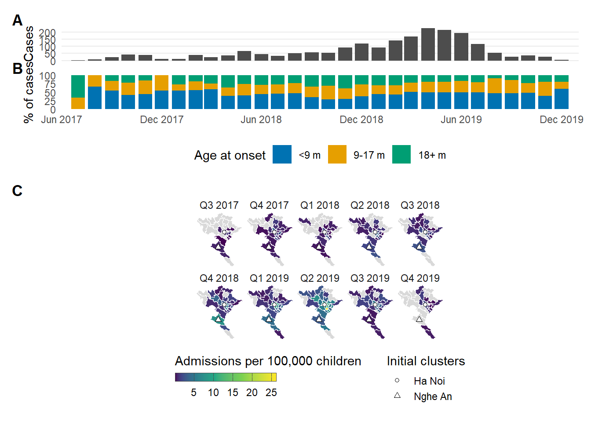
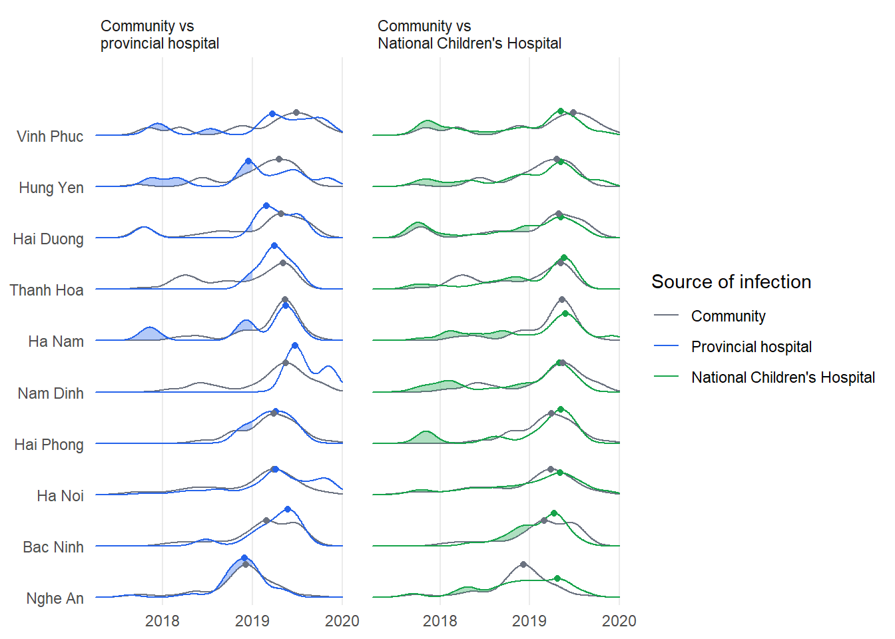
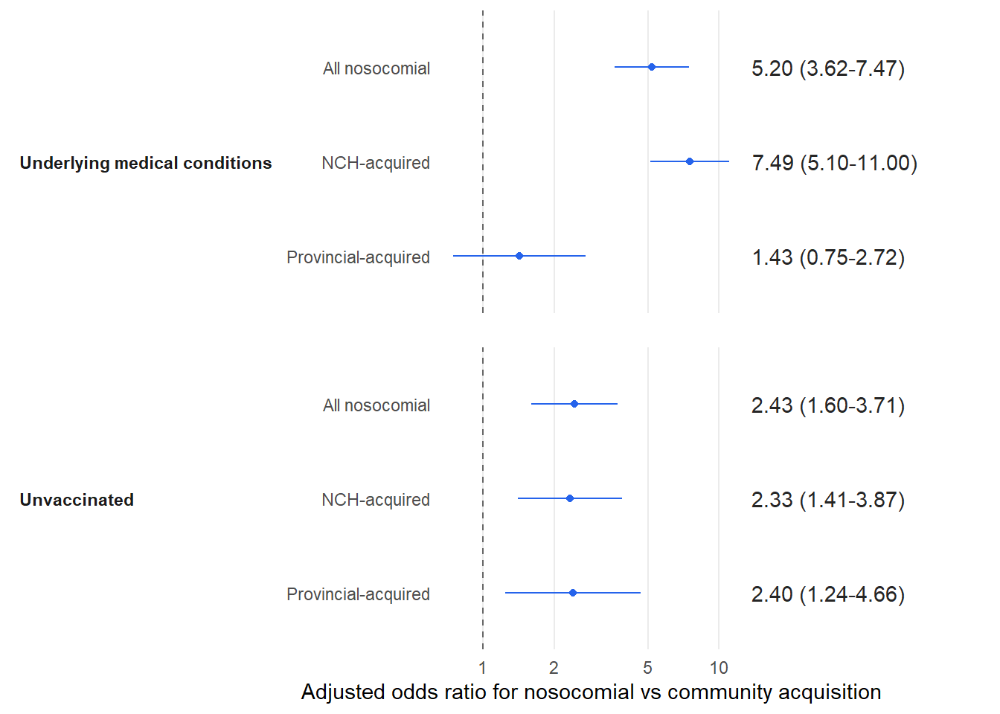
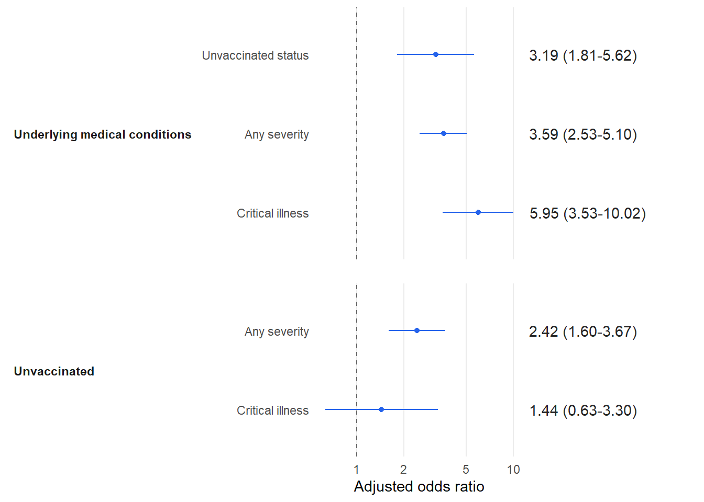

path2data <- paste0("C:/Users/ongph/github/data")Result 2
Constant
Path to data:
Files names:
case_file <- "measles/measles_hn_final.rds"
cs_file <- "census2019_cleaned.rds"
map_file <- "map/map_province.rds"
north_prov <- c("Lao Cai", "Yen Bai", "Dien Bien", "Hoa Binh", "Lai Chau", "Son La", "Ha Giang", "Cao Bang", "Bac Kan", "Lang Son", "Tuyen Quang", "Thai Nguyen", "Phu Tho", "Bac Giang", "Quang Ninh", "Bac Ninh", "Ha Nam", "Ha Noi", "Hai Duong", "Hai Phong", "Hung Yen", "Nam Dinh", "Ninh Binh", "Thai Binh", "Vinh Phuc", "Nghe An", "Thanh Hoa", "Ha Tinh", "Quang Binh")
start_date <- as.Date("2017-07-01")
end_date <- as.Date("2019-12-01")
plot_lims <- as.Date(c("2017-06-01", "2020-01-01"))
max_age <- 15
mark_prov <- c("Ha Noi", "Nghe An")
mark_lab <- "Initial clusters"
period <- "quarter"
peak_line <- NULL
col_zero <- "grey85"
col_nodenom <- "white"
age_col <- c("<9 m" = "#0072B2", "9-17 m" = "#E69F00", "18+ m" = "#009E73")
map_nrow <- 2
key_h <- 0.9
fig_width <- 11Packages
Required packages:
required <- c("tidyverse", "openxlsx", "ggridges", "patchwork", "sf", "dagitty", "splines", "gtsummary")
# Installing those that are not installed yet:
to_install <- required[! required %in% installed.packages()[, "Package"]]
if (length(to_install)) install.packages(to_install)
# Loading the packages for interactive use:
invisible(sapply(required, library, character.only = TRUE))Data
df_case <- file.path(path2data, case_file) |>
readRDS() |>
mutate(
sex = if_else(gioi %in% c(1), "M", "F"),
severity = case_when(
severity == "Non-severe" ~ 0,
severity == "Level 1" ~ 1,
severity == "Level 2" ~ 2,
),
severity = as.numeric(severity),
vaccination = case_when(
vaccination == "Unvaccinated" ~ 0,
vaccination == "Vaccinated" ~ 1,
),
)
df_map <- file.path(path2data, map_file) |>
readRDS() |>
filter(province %in% north_prov)old-style crs object detected; please recreate object with a recent sf::st_crs()cen <- df_map |> filter(province %in% mark_prov)
cen <- bind_cols(st_drop_geometry(cen),
as_tibble(suppressWarnings(st_coordinates(st_centroid(st_geometry(cen))))))
df_cs <- file.path(path2data, cs_file) |>
readRDS() |>
ungroup() |>
filter(age <= max_age, province %in% north_prov) |>
summarise(np = sum(np), .by = province)Analysis
Table 1
tbl_summary(df_case, include = c(age_month, sex, vaccination, severity, source_province, chronic_diseases))| Characteristic | N = 2,0641 |
|---|---|
| age_month | 9 (6, 16) |
| sex | |
| F | 772 (37%) |
| M | 1,292 (63%) |
| vaccination | 208 (10%) |
| severity | |
| 0 | 1,215 (59%) |
| 1 | 691 (33%) |
| 2 | 158 (7.7%) |
| source_province | |
| community | 1,273 (62%) |
| nch | 547 (27%) |
| other h | 241 (12%) |
| Unknown | 3 |
| chronic_diseases | 282 (14%) |
| 1 Median (Q1, Q3); n (%) | |
Hospital admission progression
per_unit <- c(quarter = "3 months", halfyear = "6 months", year = "1 year")[[period]]
per_label <- function(d) {
switch(period,
quarter = paste0("Q", quarter(d), " ", year(d)),
halfyear = paste0(year(d), if_else(month(d) <= 6, " H1", " H2")),
year = as.character(year(d)))
}
sqrt_rescale <- function(x, to = c(0, 1), from = range(x, na.rm = TRUE)) {
scales::rescale(sqrt(x), to = to, from = sqrt(from))
}
# key sizing moved into guide themes in ggplot2 3.5.0
new_gg <- utils::packageVersion("ggplot2") >= "3.5.0"
cbar_guide <- if (new_gg) {
guide_colourbar(order = 1, title.position = "top", title.hjust = 0,
frame.colour = "grey30", frame.linewidth = 0.3,
ticks.colour = "grey30", ticks.linewidth = 0.3,
theme = theme(legend.key.width = unit(6, "lines"),
legend.key.height = unit(0.5, "lines")))
} else {
guide_colourbar(order = 1, title.position = "top", title.hjust = 0,
frame.colour = "grey30", frame.linewidth = 0.3,
ticks.colour = "grey30", ticks.linewidth = 0.3,
barwidth = unit(5, "lines"), barheight = unit(0.5, "lines"))
}
shape_guide <- if (new_gg) {
guide_legend(order = 2, ncol = 1, title.position = "top", title.hjust = 0,
theme = theme(legend.key.height = unit(key_h, "lines"),
legend.key.spacing.y = unit(0, "pt")))
} else {
guide_legend(order = 2, ncol = 1, title.position = "top", title.hjust = 0,
keyheight = unit(key_h, "lines"))
}
# ---- case data, shared by all three panels ---------------------------------
months_all <- seq(start_date, end_date, by = "month")
pers_all <- unique(floor_date(months_all, per_unit))
df_base <- df_case |>
as_tibble() |>
ungroup() |>
filter(!is.na(province), !is.na(onset_date)) |>
mutate(onset_date = as.Date(onset_date),
onset_month = floor_date(onset_date, "month"),
province = as.character(province),
age_m = as.numeric(age_month),
agegr = cut(age_m, c(-Inf, 9, 18, Inf), right = FALSE,
labels = names(age_col))) |>
filter(province %in% north_prov,
onset_month >= start_date, onset_month <= end_date)
cat("\n-- cases retained --\n")
-- cases retained --print(tibble(all_cases = nrow(df_case),
in_figure = nrow(df_base),
missing_agegr = sum(is.na(df_base$agegr))))# A tibble: 1 × 3
all_cases in_figure missing_agegr
<int> <int> <int>
1 2064 2052 0# ---- panel A: epidemic curve ------------------------------------------------
df_epi <- df_base |>
count(onset_month) |>
complete(onset_month = months_all, fill = list(n = 0))
p_epi <- ggplot(df_epi, aes(onset_month, n)) +
{if (!is.null(peak_line)) geom_vline(xintercept = peak_line, linetype = "dashed",
colour = "grey40")} +
geom_col(fill = "grey30", width = 25) +
scale_x_date(limits = plot_lims, date_breaks = "6 months", date_labels = "%b %Y",
expand = c(0, 0)) +
scale_y_continuous(expand = expansion(mult = c(0, 0.05))) +
labs(x = NULL, y = "Cases") +
theme_minimal() +
theme(axis.text.x = element_blank(),
axis.ticks.x = element_blank(),
panel.grid.minor = element_blank(),
panel.grid.major.x = element_blank(),
plot.margin = margin(5, 5, 0, 5))
# ---- panel B: age composition over time ------------------------------------
df_age <- df_base |>
filter(!is.na(agegr)) |>
count(onset_month, agegr) |>
complete(onset_month = months_all, agegr = names(age_col), fill = list(n = 0)) |>
mutate(total = sum(n), prop = if_else(total > 0, 100 * n / total, NA_real_),
.by = onset_month) |>
mutate(agegr = factor(agegr, levels = names(age_col)))
p_age <- ggplot(df_age, aes(onset_month, prop, fill = agegr)) +
geom_col(position = position_stack(reverse = TRUE), width = 25) +
{if (!is.null(peak_line)) geom_vline(xintercept = peak_line, linetype = "dashed",
colour = "grey40")} +
scale_x_date(limits = plot_lims, date_breaks = "6 months", date_labels = "%b %Y",
expand = c(0, 0)) +
scale_y_continuous(expand = c(0, 0)) +
scale_fill_manual(values = age_col) +
labs(x = NULL, y = "% of cases", fill = "Age at onset") +
theme_minimal() +
theme(panel.grid = element_blank(),
legend.position = "bottom",
plot.margin = margin(0, 5, 5, 5))
# ---- map, denominator, and marker centroids --------------------------------
df_map <- file.path(path2data, map_file) |>
readRDS() |>
ungroup() |>
filter(province %in% north_prov)old-style crs object detected; please recreate object with a recent sf::st_crs()cen <- df_map |> filter(province %in% mark_prov)
cen <- bind_cols(st_drop_geometry(cen),
as_tibble(suppressWarnings(st_coordinates(st_centroid(st_geometry(cen))))))
df_cs <- file.path(path2data, cs_file) |>
readRDS() |>
ungroup() |> # saved object carried grouping
filter(age <= max_age, province %in% north_prov) |>
summarise(np = sum(np), .by = province)
cov_tbl <- tibble(onset_month = months_all) |>
mutate(onset_per = floor_date(onset_month, per_unit)) |>
count(onset_per, name = "months_covered")
cat("\n-- months covered per panel (uneven means a partial period) --\n")
-- months covered per panel (uneven means a partial period) --print(cov_tbl)# A tibble: 10 × 2
onset_per months_covered
<date> <int>
1 2017-07-01 3
2 2017-10-01 3
3 2018-01-01 3
4 2018-04-01 3
5 2018-07-01 3
6 2018-10-01 3
7 2019-01-01 3
8 2019-04-01 3
9 2019-07-01 3
10 2019-10-01 3df_per <- df_base |>
mutate(onset_per = floor_date(onset_month, per_unit)) |>
count(province, onset_per) |>
complete(province = north_prov, onset_per = pers_all, fill = list(n = 0)) |>
left_join(df_cs, by = "province") |>
mutate(inc = n / np * 1e5,
inc_plot = if_else(n > 0, inc, NA_real_), # zero drops out, drawn as grey
per_lab = factor(per_label(onset_per), levels = per_label(pers_all)))
cat("\n-- provinces missing from the census --\n"); print(setdiff(north_prov, df_cs$province))
-- provinces missing from the census --character(0)cat("\n-- provinces missing from the map --\n"); print(setdiff(north_prov, df_map$province))
-- provinces missing from the map --character(0)df_sf <- df_map |> left_join(df_per, by = "province")
# ---- how tall does the map grid need to be? --------------------------------
bb <- st_bbox(df_map)
lat0 <- mean(c(bb["ymin"], bb["ymax"]))
w_km <- (bb["xmax"] - bb["xmin"]) * 111 * cos(lat0 * pi / 180)
h_km <- (bb["ymax"] - bb["ymin"]) * 111
map_ncol <- ceiling(length(pers_all) / map_nrow)
pan_w <- (fig_width - 1) / map_ncol # usable width per facet, inches
map_h <- pan_w * (h_km / w_km) * map_nrow + 0.35 * map_nrow + 1.0 # strips + legend
h_ratio <- c(1, 1, map_h / 1.7) # A and B get ~1.7 in each
cat("\n-- map sizing --\n")
-- map sizing --print(tibble(map_ncol, map_nrow,
aspect_w_over_h = round(w_km / h_km, 2),
panel_c_height_in = round(map_h, 1),
suggested_fig_height_in = round(map_h + 3.4, 1)))# A tibble: 1 × 5
map_ncol map_nrow aspect_w_over_h panel_c_height_in suggested_fig_height_in
<dbl> <dbl> <dbl> <dbl> <dbl>
1 5 2 0.86 6.4 9.8# ---- panel C: incidence map -------------------------------------------------
inc_breaks <- waiver()
p_map <- ggplot(df_sf) +
geom_sf(aes(fill = inc_plot), colour = "white", linewidth = 0.1) +
geom_sf(data = df_sf |> filter(is.na(np)), fill = col_nodenom,
colour = "white", linewidth = 0.1) +
geom_point(data = cen, aes(x = X, y = Y, shape = province),
fill = "white", colour = "black", stroke = 0.5) +
scale_fill_viridis_c(rescaler = sqrt_rescale, na.value = col_zero,
breaks = inc_breaks) +
scale_shape_manual(values = setNames(c(21, 24), mark_prov)) +
coord_sf(expand = FALSE) +
facet_wrap(~ per_lab, nrow = map_nrow) +
guides(fill = cbar_guide, shape = shape_guide) +
labs(x = NULL, y = NULL, shape = mark_lab,
fill = "Admissions per 100,000 children") +
theme_minimal() +
theme(axis.text = element_blank(),
axis.ticks = element_blank(),
panel.grid = element_blank(),
panel.spacing = unit(0.2, "lines"),
strip.text = element_text(margin = margin(2, 0, 2, 0)),
legend.position = "bottom",
legend.box = "horizontal",
legend.box.just = "top",
legend.box.spacing = unit(0.5, "lines"),
plot.margin = margin(5, 5, 5, 5))
# ---- assemble ---------------------------------------------------------------
p_all <- p_epi / p_age / p_map +
plot_layout(heights = h_ratio) +
plot_annotation(tag_levels = "A") &
theme(plot.tag = element_text(face = "bold"))
p_all
# ggsave("figs/chap2/outbreak_overview.png", p_all,
# width = 6, height = 6.5, dpi = 300, bg = "white")Density of nosocomial infection
library(tidyverse)
library(ggridges)
# ---- settings ---------------------------------------------------------------
n_provs <- 10
bw_days <- 40 # kernel sd, in days
min_n <- 3 # min cases per province x source
weight_by_n <- FALSE # kept FALSE: shape only
ridge_scale <- 0.9
grid_n <- 512
x_lims <- as.Date(c("2017-04-01", "2020-01-01"))
hl_end <- as.Date("2019-01-01") # highlight only before this date
hl_alpha <- 0.35
sort_by <- "mean" # "mean", "other h", or "nch"
n_boot <- 1000
set.seed(1)
src_col <- c(community = "#6B7280", `other h` = "#2563EB", nch = "#16A34A")
src_lab <- c(community = "Community",
`other h` = "Provincial hospital",
nch = "National Children's Hospital")
src_ord <- c("community", "other h", "nch")
# ---- data -------------------------------------------------------------------
df_top <- df_case |>
as_tibble() |>
filter(!is.na(source_province), !is.na(onset_date), !is.na(province)) |>
mutate(onset_date = as.Date(onset_date), province = as.character(province)) |>
filter(onset_date >= x_lims[1], onset_date <= x_lims[2])
provs <- df_top |> count(province, sort = TRUE) |> slice_head(n = n_provs) |> pull(province)
df_top <- df_top |>
filter(province %in% provs) |>
filter(n() >= min_n, .by = c(province, source_province)) |>
filter(any(source_province == "community"), .by = province)
# ---- one grid, one bandwidth, one kernel matrix per province x source --------
kde_grid <- seq(as.numeric(x_lims[1]), as.numeric(x_lims[2]), length.out = grid_n)
dens_tbl <- df_top |>
summarise(n = n(), x = list(as.numeric(onset_date)), .by = c(province, source_province)) |>
mutate(K = map(x, \(v) dnorm(outer(v, kde_grid, "-"), sd = bw_days)), # n x grid
dens_v = map(K, colMeans),
dens_v = if (weight_by_n) map2(dens_v, n, \(v, k) v * k) else dens_v)
gmax <- max(unlist(dens_tbl$dens_v)) # single global constant
# ---- peaks and bootstrap ----------------------------------------------------
boot_modes <- function(K, nrep) {
n <- nrow(K)
W <- t(rmultinom(nrep, n, rep.int(1 / n, n))) # nrep x n resample counts
kde_grid[max.col(W %*% K, ties.method = "first")]
}
pk <- dens_tbl |>
mutate(i = map_int(dens_v, which.max),
peak_x = kde_grid[i],
peak_h = map2_dbl(dens_v, i, \(v, j) v[j]) / gmax * ridge_scale,
boot = map(K, boot_modes, nrep = n_boot))
# how stable is each peak? ratio2 near 1 means two rival modes of similar height
diag_tbl <- dens_tbl |>
mutate(lm_idx = map(dens_v, \(v) which(diff(sign(diff(v))) == -2) + 1),
n_modes = map_int(lm_idx, length),
ratio2 = map2_dbl(dens_v, lm_idx,
\(v, j) if (length(j) < 2) 0 else
{h <- sort(v[j], decreasing = TRUE); h[2] / h[1]})) |>
select(province, source_province, n, n_modes, ratio2) |>
arrange(desc(ratio2))
print(as_tibble(diag_tbl), n = Inf)# A tibble: 30 × 5
province source_province n n_modes ratio2
<chr> <chr> <int> <int> <dbl>
1 Nghe An nch 43 4 0.919
2 Bac Ninh community 56 3 0.915
3 Vinh Phuc other h 12 4 0.834
4 Hai Duong other h 7 3 0.755
5 Hai Duong nch 26 4 0.731
6 Hung Yen other h 9 5 0.666
7 Ha Noi other h 67 5 0.653
8 Bac Ninh nch 26 2 0.630
9 Vinh Phuc nch 24 3 0.604
10 Ha Nam other h 11 3 0.594
11 Nam Dinh other h 3 2 0.560
12 Thanh Hoa community 45 3 0.533
13 Hung Yen nch 26 5 0.505
14 Hai Duong community 52 4 0.454
15 Hai Phong community 48 2 0.430
16 Vinh Phuc community 39 4 0.418
17 Thanh Hoa nch 33 3 0.396
18 Nam Dinh nch 38 2 0.390
19 Ha Nam nch 32 5 0.358
20 Hai Phong nch 19 3 0.357
21 Hung Yen community 78 3 0.331
22 Nam Dinh community 56 2 0.312
23 Ha Noi nch 144 3 0.307
24 Ha Noi community 497 3 0.295
25 Ha Nam community 58 3 0.253
26 Nghe An community 93 3 0.183
27 Bac Ninh other h 22 2 0.180
28 Nghe An other h 36 3 0.0811
29 Hai Phong other h 10 1 0
30 Thanh Hoa other h 11 1 0 # ---- share of cases before hl_end: the number behind the shading -------------
early_cmp <- df_top |>
summarise(n = n(), pct_early = 100 * mean(onset_date < hl_end),
.by = c(province, source_province))
early_cmp <- early_cmp |>
filter(source_province != "community") |>
left_join(early_cmp |> filter(source_province == "community") |>
select(province, n_comm = n, pct_comm = pct_early), by = "province") |>
mutate(diff = pct_early - pct_comm) |>
arrange(desc(diff))
print(as_tibble(early_cmp), n = Inf)# A tibble: 20 × 7
province source_province n pct_early n_comm pct_comm diff
<chr> <chr> <int> <dbl> <int> <dbl> <dbl>
1 Hung Yen other h 9 55.6 78 30.8 24.8
2 Ha Nam other h 11 45.5 58 22.4 23.0
3 Ha Nam nch 32 40.6 58 22.4 18.2
4 Nam Dinh nch 38 42.1 56 25 17.1
5 Hai Duong nch 26 50 52 36.5 13.5
6 Bac Ninh nch 26 38.5 56 26.8 11.7
7 Hung Yen nch 26 42.3 78 30.8 11.5
8 Vinh Phuc nch 24 45.8 39 35.9 9.94
9 Hai Phong nch 19 31.6 48 22.9 8.66
10 Nghe An other h 36 72.2 93 65.6 6.63
11 Ha Noi nch 144 39.6 497 36.2 3.37
12 Thanh Hoa nch 33 42.4 45 44.4 -2.02
13 Hai Phong other h 10 20 48 22.9 -2.92
14 Vinh Phuc other h 12 25 39 35.9 -10.9
15 Bac Ninh other h 22 13.6 56 26.8 -13.1
16 Nghe An nch 43 51.2 93 65.6 -14.4
17 Ha Noi other h 67 20.9 497 36.2 -15.3
18 Hai Duong other h 7 14.3 52 36.5 -22.3
19 Nam Dinh other h 3 0 56 25 -25
20 Thanh Hoa other h 11 9.09 45 44.4 -35.4 # ---- lead time: hospital peak minus community peak (negative = hospital first)
comm <- pk |> filter(source_province == "community") |>
select(province, peak_comm = peak_x, boot_comm = boot)
lead <- pk |>
filter(source_province != "community") |>
select(province, source_province, n, peak_x, boot) |>
left_join(comm, by = "province") |>
mutate(lead = peak_x - peak_comm,
lo = map2_dbl(boot, boot_comm, \(a, b) unname(quantile(a - b, 0.025))),
hi = map2_dbl(boot, boot_comm, \(a, b) unname(quantile(a - b, 0.975))))
print(lead |> select(province, source_province, n, lead, lo, hi) |> arrange(lead), n = Inf)# A tibble: 20 × 6
province source_province n lead lo hi
<chr> <chr> <int> <dbl> <dbl> <dbl>
1 Hung Yen other h 9 -126. -527. 203.
2 Vinh Phuc other h 12 -96.4 -576. 165.
3 Hai Duong other h 7 -59.0 -551. 92.5
4 Vinh Phuc nch 24 -53.1 -627. 57.1
5 Thanh Hoa other h 11 -35.4 -114. 360.
6 Nam Dinh nch 38 -13.8 -62.9 29.5
7 Nghe An other h 36 -5.90 -49.2 27.5
8 Ha Nam other h 11 1.97 -551. 33.4
9 Hai Phong other h 10 7.87 -149. 92.4
10 Hai Duong nch 26 7.87 -637. 86.6
11 Ha Noi other h 67 9.83 -9.83 210.
12 Ha Nam nch 32 11.8 -31.5 37.4
13 Thanh Hoa nch 33 13.8 -25.6 411.
14 Hung Yen nch 26 15.7 -167. 82.6
15 Ha Noi nch 144 37.4 3.93 66.9
16 Hai Phong nch 19 39.3 -77.4 88.5
17 Nam Dinh other h 3 39.3 1.97 197.
18 Bac Ninh nch 26 41.3 -183. 72.8
19 Bac Ninh other h 22 86.5 -76.7 122.
20 Nghe An nch 43 140. -214. 173. ord_key <- lead |>
summarise(key = if (sort_by == "mean") mean(lead)
else {v <- lead[source_province == sort_by]; if (length(v)) v[1] else NA_real_},
.by = province)
lev <- tibble(province = unique(dens_tbl$province)) |>
left_join(ord_key, by = "province") |>
mutate(key = coalesce(key, Inf)) |> # no hospital source: sits at the bottom
arrange(desc(key)) |>
pull(province) # most negative ends up on top
yof <- function(p) match(p, lev)
# ---- long density table, community duplicated into both panels --------------
pan_lab <- c(`other h` = "Community vs \nprovincial hospital",
nch = "Community vs \nNational Children's Hospital")
pan_lev <- unname(pan_lab)
dens_long <- dens_tbl |>
select(province, source_province, dens_v) |>
mutate(d = map(dens_v, \(v) tibble(gi = seq_along(v), xn = kde_grid,
height = v / gmax * ridge_scale))) |>
select(-dens_v) |>
unnest(d) |>
mutate(onset_date = as.Date(xn, origin = "1970-01-01"))
expand_panels <- function(dat) {
bind_rows(
dat |> filter(source_province %in% c("community", "other h")) |> mutate(panel = pan_lab[["other h"]]),
dat |> filter(source_province %in% c("community", "nch")) |> mutate(panel = pan_lab[["nch"]])
) |>
mutate(panel = factor(panel, levels = pan_lev),
y = yof(province),
source_province = factor(source_province, levels = src_ord))
}
df_dens <- expand_panels(dens_long)
df_comm <- df_dens |> filter(source_province == "community")
df_hosp <- df_dens |> filter(source_province != "community")
pk_pan <- pk |> select(province, source_province, peak_x, peak_h) |>
expand_panels() |>
mutate(peak_date = as.Date(peak_x, origin = "1970-01-01"))
# ---- highlight band: hospital above community, before hl_end ----------------
hl_band <- dens_long |>
filter(source_province != "community", xn <= as.numeric(hl_end)) |>
rename(h_h = height) |>
left_join(dens_long |> filter(source_province == "community") |>
select(province, gi, h_c = height), by = c("province", "gi")) |>
mutate(panel = factor(pan_lab[as.character(source_province)], levels = pan_lev),
source_province = factor(source_province, levels = src_ord),
y = yof(province),
ymin = y + h_c,
ymax = y + pmax(h_h, h_c))
# ---- plot -------------------------------------------------------------------
p_ridge <- ggplot(mapping = aes(x = onset_date, y = y, height = height,
colour = source_province,
group = interaction(province, source_province))) +
geom_ridgeline(data = df_comm, fill = NA, scale = 1, key_glyph = "path") +
geom_ribbon(data = hl_band,
aes(x = onset_date, ymin = ymin, ymax = ymax, fill = source_province,
group = interaction(province, source_province)),
inherit.aes = FALSE, alpha = hl_alpha, colour = NA, show.legend = FALSE) +
geom_ridgeline(data = df_hosp, fill = NA, scale = 1, key_glyph = "path") +
geom_point(data = pk_pan, aes(x = peak_date, y = y + peak_h, colour = source_province),
inherit.aes = FALSE, show.legend = FALSE) +
facet_wrap(~ panel) +
scale_x_date(date_breaks = "1 year", date_labels = "%Y", expand = expansion(mult = 0.01)) +
scale_y_continuous(breaks = seq_along(lev), labels = lev,
expand = expansion(add = c(0.15, ridge_scale + 0.15))) +
scale_colour_manual(values = src_col, breaks = src_ord,
labels = unname(src_lab[src_ord])) +
scale_fill_manual(values = src_col, guide = "none") +
coord_cartesian(xlim = x_lims, clip = "off") +
labs(x = NULL, y = NULL, colour = "Source of infection") +
theme_minimal() +
theme(panel.grid.minor = element_blank(),
panel.grid.major.y = element_blank(),
panel.spacing.x = unit(1, "lines"),
strip.text = element_text(hjust = 0))
p_ridge
# ggsave("figs/chap2/ridge_source_onset.png", p_ridge, width = 6.5, height = 4, dpi = 300, bg = "white")Nosocomial infection
# ---- settings ---------------------------------------------------------------
mcv1_age <- 9 # months, MCV1 in the Vietnam schedule
cal_sev <- FALSE # TRUE only if you add cal -> sev to the DAG
cal_in_med <- FALSE # FALSE matches dagitty {age}; TRUE adds calendar time
out_dir <- "figs/chap2"
umc_lab <- "Underlying medical conditions"
dir.create(out_dir, recursive = TRUE, showWarnings = FALSE)
# ---- helpers ----------------------------------------------------------------
yn <- function(x) {
if (is.logical(x)) return(x)
if (is.numeric(x)) return(x == 1)
s <- tolower(trimws(as.character(x)))
out <- rep(NA, length(s))
out[s %in% c("yes", "y", "1", "true", "t")] <- TRUE
out[s %in% c("no", "n", "0", "false", "f")] <- FALSE
out
}
tidy_or <- function(m, keep = NULL) {
ct <- summary(m)$coefficients
est <- ct[, 1]; se <- ct[, 2]
sel <- !grepl("ns\\(|Intercept", rownames(ct))
out <- tibble(term = rownames(ct)[sel],
or = exp(est[sel]),
lo = exp(est[sel] - 1.96 * se[sel]),
hi = exp(est[sel] + 1.96 * se[sel]),
p = 2 * pnorm(-abs(est[sel] / se[sel])),
n = stats::nobs(m)) |>
mutate(txt = sprintf("%.2f (%.2f-%.2f)", or, lo, hi))
if (is.null(keep)) out else filter(out, term %in% keep)
}
lrt_p <- function(full, red) anova(red, full, test = "LRT")[2, "Pr(>Chi)"]
desc_out <- function(dat, v, outcome) {
lv <- levels(dat[[v]])
d <- dat |>
filter(!is.na(.data[[v]])) |>
summarise(n_tot = n(), n_pos = sum(.data[[outcome]]), .by = all_of(v)) |>
rename(level = 1) |>
mutate(level = as.character(level))
if (!is.null(lv)) d <- d |> arrange(match(level, lv))
d |> mutate(term = paste0(v, level),
cell = sprintf("%d/%d (%.1f%%)", n_pos, n_tot, 100 * n_pos / n_tot))
}
# one header row, then one indented row per level, ORs taken from `adj`
blk <- function(dat, v, header, outcome, adj) {
desc_out(dat, v, outcome) |>
left_join(adj |> select(term, a = txt), by = "term") |>
mutate(a = replace_na(a, "1 (ref)")) |>
transmute(Characteristic = paste0(" ", level), n_out = cell, Adjusted = a) |>
(\(d) bind_rows(tibble(Characteristic = header, n_out = "", Adjusted = ""), d))()
}
or_to_rr <- function(or, p0) or / (1 - p0 + p0 * or)
evalue <- function(rr) { rr <- ifelse(rr < 1, 1 / rr, rr); rr + sqrt(rr * (rr - 1)) }
# ---- the DAG ----------------------------------------------------------------
g <- dagitty('dag {
cal [pos="0,3"] age [pos="0,2"] med [pos="0,1"]
vacc [pos="2,2.5"] sev [pos="2,1.5"]
hexp [latent, pos="2,0.5"]
noso [pos="4,1.5"]
cal -> vacc cal -> hexp cal -> noso
age -> med age -> vacc age -> sev age -> hexp
med -> vacc med -> sev med -> hexp
vacc -> sev vacc -> noso
hexp -> noso
}')
if (cal_sev) g <- dagitty(paste0(sub("\\}$", "", as.character(g)), " cal -> sev }"))
cat("\n===== ADJUSTMENT SETS: one entry per model fitted below =====\n")
===== ADJUSTMENT SETS: one entry per model fitted below =====for (e in list(c("med", "noso"), c("vacc", "noso"), c("med", "vacc"),
c("vacc", "sev"), c("med", "sev"),
c("age", "noso"), c("age", "vacc"), c("age", "sev"))) {
cat("\n", e[1], "->", e[2], "\n total: ", sep = "")
print(adjustmentSets(g, e[1], e[2], effect = "total"))
}
med->noso
total: { age }
vacc->noso
total: { age, cal, med }
med->vacc
total: { age }
vacc->sev
total: { age, med }
med->sev
total: { age }
age->noso
total: {}
age->vacc
total: {}
age->sev
total: {}cat("\n-- testable implications --\n"); print(impliedConditionalIndependencies(g))
-- testable implications --age _||_ cal
cal _||_ med
cal _||_ sev | age, med, vacc
noso _||_ sev | age, med, vacc# ---- data -------------------------------------------------------------------
df_an <- df_case |>
as_tibble() |>
ungroup() |>
filter(!is.na(source_province)) |>
mutate(
onset_date = as.Date(onset_date),
t_num = as.numeric(onset_date),
age_m = as.numeric(age_month),
umc = yn(chronic_diseases),
vacc = yn(vaccination),
sev_n = as.integer(as.character(severity)),
noso = as.integer(source_province != "community"),
src3 = factor(source_province, levels = c("community", "other h", "nch")),
elig = age_m >= mcv1_age,
umc_f = factor(if_else(umc, "Yes", "No"), levels = c("No", "Yes")),
vacc3 = factor(case_when(is.na(elig) ~ NA_character_,
!elig ~ "Age-ineligible",
vacc ~ "Vaccinated",
!vacc ~ "Eligible, unvaccinated"),
levels = c("Vaccinated", "Eligible, unvaccinated", "Age-ineligible")),
age_band = cut(age_m, c(-Inf, mcv1_age, 18, 60, Inf), right = FALSE,
labels = c("<9 m", "9-17 m", "18-59 m", "60+ m")),
sev1 = as.integer(sev_n >= 1),
sev2 = as.integer(sev_n >= 2)
)
cat("\n-- recoding check: extra NAs mean a coding mismatch --\n")
-- recoding check: extra NAs mean a coding mismatch --print(tibble(var = c("chronic_diseases", "vaccination", "severity"),
na_raw = c(sum(is.na(df_case$chronic_diseases)),
sum(is.na(df_case$vaccination)),
sum(is.na(df_case$severity))),
na_recoded = c(sum(is.na(df_an$umc)), sum(is.na(df_an$vacc)),
sum(is.na(df_an$sev_n)))))# A tibble: 3 × 3
var na_raw na_recoded
<chr> <int> <int>
1 chronic_diseases 0 0
2 vaccination 0 0
3 severity 0 0df_el <- df_an |>
filter(elig, !is.na(vacc)) |>
mutate(age_band = fct_relevel(fct_drop(age_band), "9-17 m"),
unvacc = as.integer(!vacc),
vacc_f = factor(if_else(vacc, "Vaccinated", "Unvaccinated"),
levels = c("Vaccinated", "Unvaccinated")))
df_sev <- df_el |> filter(!is.na(sev_n), !is.na(umc))
cat("\n-- analysis sets --\n")
-- analysis sets --print(tibble(set = c("all cases with a recorded source",
"age-eligible, vaccination known",
"age-eligible, severity known"),
n = c(nrow(df_an), nrow(df_el), nrow(df_sev))))# A tibble: 3 × 2
set n
<chr> <int>
1 all cases with a recorded source 2061
2 age-eligible, vaccination known 1122
3 age-eligible, severity known 1122cat("\n-- sparse-cell check --\n")
-- sparse-cell check --print(table(df_an$umc_f, df_an$noso, dnn = c(umc_lab, "nosocomial"), useNA = "ifany")) nosocomial
Underlying medical conditions 0 1
No 1173 607
Yes 100 181print(table(df_el$vacc_f, df_el$noso, dnn = c("vaccination", "nosocomial"), useNA = "ifany")) nosocomial
vaccination 0 1
Vaccinated 166 32
Unvaccinated 563 361print(table(df_sev$umc_f, df_sev$sev_n, dnn = c(umc_lab, "severity"), useNA = "ifany")) severity
Underlying medical conditions 0 1 2
No 662 254 36
Yes 74 65 31# ---- models: one per target effect, each matching its dagitty set ----------
cal_rhs <- " + ns(t_num, 3)"
med_rhs <- if (cal_in_med) cal_rhs else ""
sev_rhs <- if (cal_sev) cal_rhs else ""
# med -> noso, total. dagitty {age}
mA <- glm(as.formula(paste0("noso ~ umc_f + age_band", med_rhs)), df_an, family = binomial)
mB0 <- glm(as.formula(paste0("noso ~ umc_f + age_band", med_rhs)), df_el, family = binomial)
# vacc -> noso. dagitty {age, cal, med}. cal is required: conditioning on vacc
# opens med -> vacc <- cal -> noso, and cal closes it again.
mB1 <- glm(as.formula(paste0("noso ~ vacc_f + age_band + umc_f", cal_rhs)),
df_el, family = binomial)
# med -> vacc, total. dagitty {age}
mC <- glm(unvacc ~ umc_f + age_band, df_el, family = binomial)
# vacc -> sev. dagitty {age, med}
mS1 <- glm(as.formula(paste0("sev1 ~ vacc_f + age_band + umc_f", sev_rhs)),
df_sev, family = binomial)
mS2 <- glm(as.formula(paste0("sev2 ~ vacc_f + age_band + umc_f", sev_rhs)),
df_sev, family = binomial)
# med -> sev, total. dagitty {age}; vaccination is a mediator, left out
mS1t <- glm(as.formula(paste0("sev1 ~ umc_f + age_band", sev_rhs)), df_sev, family = binomial)
mS2t <- glm(as.formula(paste0("sev2 ~ umc_f + age_band", sev_rhs)), df_sev, family = binomial)
# age is exogenous on the DAG, so the crude estimate is the total effect
mAgeN_all <- glm(noso ~ age_band, df_an, family = binomial)
mAgeN_el <- glm(noso ~ age_band, df_el, family = binomial)
mAgeV <- glm(unvacc ~ age_band, df_el, family = binomial)
mAgeS1 <- glm(sev1 ~ age_band, df_sev, family = binomial)
mAgeS2 <- glm(sev2 ~ age_band, df_sev, family = binomial)
cat("\n-- model register: dagitty set vs what was fitted --\n")
-- model register: dagitty set vs what was fitted --print(tribble(
~model, ~target, ~dagitty_set, ~fitted,
"mA/mB0", "med -> noso", "{age}", paste0("age", if (cal_in_med) " + cal" else ""),
"mB1", "vacc -> noso", "{age, cal, med}", "age + cal + med",
"mC", "med -> vacc", "{age}", "age",
"mS1/2", "vacc -> sev", "{age, med}", paste0("age + med", if (cal_sev) " + cal" else ""),
"mS1t/2t","med -> sev", "{age}", paste0("age", if (cal_sev) " + cal" else ""),
"mAge*", "age -> *", "{ } exogenous", "unadjusted"
))# A tibble: 6 × 4
model target dagitty_set fitted
<chr> <chr> <chr> <chr>
1 mA/mB0 med -> noso {age} age
2 mB1 vacc -> noso {age, cal, med} age + cal + med
3 mC med -> vacc {age} age
4 mS1/2 vacc -> sev {age, med} age + med
5 mS1t/2t med -> sev {age} age
6 mAge* age -> * { } exogenous unadjusted # ---- testable implications, tested ----------------------------------------
cat("\n===== TESTING THE FOUR IMPLIED CONDITIONAL INDEPENDENCIES =====\n")
===== TESTING THE FOUR IMPLIED CONDITIONAL INDEPENDENCIES =====m_ac <- lm(age_m ~ ns(t_num, 3), df_an)
cat("\nage _||_ cal p =", signif(anova(m_ac)[1, "Pr(>F)"], 3),
" R2 =", round(summary(m_ac)$r.squared, 4), "\n")
age _||_ cal p = 1.58e-06 R2 = 0.0143 cat("cal _||_ med p =",
signif(lrt_p(glm(umc ~ ns(t_num, 3), df_an, family = binomial),
glm(umc ~ 1, df_an, family = binomial)), 3), "\n")cal _||_ med p = 0.138 for (k in 1:2) {
f <- glm(as.formula(paste0("sev", k, " ~ age_band + umc_f + vacc_f + ns(t_num, 3)")),
df_sev, family = binomial)
r <- glm(as.formula(paste0("sev", k, " ~ age_band + umc_f + vacc_f")),
df_sev, family = binomial)
cat("cal _||_ sev>=", k, " | age,med,vacc p =", signif(lrt_p(f, r), 3), "\n", sep = "")
}cal _||_ sev>=1 | age,med,vacc p =2.09e-07
cal _||_ sev>=2 | age,med,vacc p =0.0552for (k in 1:2) {
f <- glm(as.formula(paste0("sev", k, " ~ age_band + umc_f + vacc_f + noso")),
df_sev, family = binomial)
r <- glm(as.formula(paste0("sev", k, " ~ age_band + umc_f + vacc_f")),
df_sev, family = binomial)
ct <- summary(f)$coefficients["noso", ]
cat("noso _||_ sev>=", k, " | age,med,vacc OR = ", sprintf("%.2f (%.2f-%.2f)",
exp(ct[1]), exp(ct[1] - 1.96 * ct[2]), exp(ct[1] + 1.96 * ct[2])),
" p = ", signif(lrt_p(f, r), 3), "\n", sep = "")
}noso _||_ sev>=1 | age,med,vacc OR = 2.38 (1.81-3.13) p = 6.68e-10
noso _||_ sev>=2 | age,med,vacc OR = 2.67 (1.52-4.67) p = 0.000481cat("\nIf the last test rejects, add hexp -> sev to the DAG and re-derive the sets.\n")
If the last test rejects, add hexp -> sev to the DAG and re-derive the sets.# =============================================================================
# SECTION 1. WHO ACQUIRED MEASLES IN HOSPITAL
# =============================================================================
cat("\n\n===== SECTION 1: WHO ACQUIRED MEASLES IN HOSPITAL =====\n")
===== SECTION 1: WHO ACQUIRED MEASLES IN HOSPITAL =====cat("\n-- 1.0 how much transmission was nosocomial --\n")
-- 1.0 how much transmission was nosocomial --print(df_an |> count(src3) |> mutate(pct = round(100 * n / sum(n), 1)))# A tibble: 3 × 3
src3 n pct
<fct> <int> <dbl>
1 community 1273 61.8
2 other h 241 11.7
3 nch 547 26.5cat("\n-- 1.0b age (months) by source --\n")
-- 1.0b age (months) by source --print(df_an |>
mutate(grp = if_else(noso == 1, "Nosocomial", "Community")) |>
summarise(n = n(), med = median(age_m, na.rm = TRUE),
q1 = quantile(age_m, .25, na.rm = TRUE),
q3 = quantile(age_m, .75, na.rm = TRUE), .by = grp))# A tibble: 2 × 5
grp n med q1 q3
<chr> <int> <dbl> <dbl> <dbl>
1 Community 1273 9 7 20
2 Nosocomial 788 8 6 13cat("\n-- 1.1 sensitivity: extra calendar adjustment on med -> noso --\n")
-- 1.1 sensitivity: extra calendar adjustment on med -> noso --print(bind_rows(
glm(noso ~ umc_f + age_band, df_el, family = binomial) |>
tidy_or("umc_fYes") |> mutate(model = "age only (dagitty set)"),
glm(noso ~ umc_f + age_band + ns(t_num, 3), df_el, family = binomial) |>
tidy_or("umc_fYes") |> mutate(model = "age + calendar spline")) |>
select(model, aOR = txt, p))# A tibble: 2 × 3
model aOR p
<chr> <chr> <dbl>
1 age only (dagitty set) 5.20 (3.62-7.47) 5.09e-19
2 age + calendar spline 5.14 (3.58-7.40) 1.08e-18tab_noso <- bind_rows(
tibble(Characteristic = sprintf("PANEL A. All cases (n = %d)", nrow(df_an)),
n_out = "", Adjusted = ""),
blk(df_an, "umc_f", umc_lab, "noso", tidy_or(mA)),
blk(df_an, "age_band", "Age at onset (total effect, unadjusted)", "noso",
tidy_or(mAgeN_all)),
tibble(Characteristic = sprintf("PANEL B. Age-eligible cases (n = %d)", nrow(df_el)),
n_out = "", Adjusted = ""),
blk(df_el, "umc_f", umc_lab, "noso", tidy_or(mB0)),
blk(df_el, "vacc_f", "Vaccination status", "noso", tidy_or(mB1)),
blk(df_el, "age_band", "Age at onset (total effect, unadjusted)", "noso",
tidy_or(mAgeN_el))
) |>
rename(`Nosocomial/total (%)` = n_out, `OR (95% CI)` = Adjusted)
cat("\n-- TABLE 3.2 Factors associated with nosocomial vs community acquisition --\n")
-- TABLE 3.2 Factors associated with nosocomial vs community acquisition --print(tab_noso, n = Inf)# A tibble: 20 × 3
Characteristic `Nosocomial/total (%)` `OR (95% CI)`
<chr> <chr> <chr>
1 "PANEL A. All cases (n = 2061)" "" ""
2 "Underlying medical conditions" "" ""
3 " No" "607/1780 (34.1%)" "1 (ref)"
4 " Yes" "181/281 (64.4%)" "4.07 (3.09-…
5 "Age at onset (total effect, unadjusted… "" ""
6 " <9 m" "395/939 (42.1%)" "1 (ref)"
7 " 9-17 m" "262/643 (40.7%)" "0.95 (0.77-…
8 " 18-59 m" "93/299 (31.1%)" "0.62 (0.47-…
9 " 60+ m" "38/180 (21.1%)" "0.37 (0.25-…
10 "PANEL B. Age-eligible cases (n = 1122)" "" ""
11 "Underlying medical conditions" "" ""
12 " No" "284/952 (29.8%)" "1 (ref)"
13 " Yes" "109/170 (64.1%)" "5.20 (3.62-…
14 "Vaccination status" "" ""
15 " Vaccinated" "32/198 (16.2%)" "1 (ref)"
16 " Unvaccinated" "361/924 (39.1%)" "2.43 (1.60-…
17 "Age at onset (total effect, unadjusted… "" ""
18 " 9-17 m" "262/643 (40.7%)" "1 (ref)"
19 " 18-59 m" "93/299 (31.1%)" "0.66 (0.49-…
20 " 60+ m" "38/180 (21.1%)" "0.39 (0.26-…write_csv(tab_noso, file.path(out_dir, "tab_nosocomial_factors.csv"))
split_fit <- function(keep_src, src_lab) {
d <- df_el |> filter(source_province %in% c("community", keep_src))
bind_rows(
glm(as.formula(paste0("noso ~ umc_f + age_band", med_rhs)), d, family = binomial) |>
tidy_or("umc_fYes") |> mutate(Effect = umc_lab),
glm(as.formula(paste0("noso ~ vacc_f + age_band + umc_f", cal_rhs)), d,
family = binomial) |>
tidy_or("vacc_fUnvaccinated") |> mutate(Effect = "Unvaccinated")
) |> mutate(Source = src_lab)
}
tab_src <- bind_rows(split_fit("nch", "National Children's Hospital"),
split_fit("other h", "Provincial hospitals"))
cat("\n-- TABLE 3.3 Nosocomial acquisition by hospital of acquisition --\n")
-- TABLE 3.3 Nosocomial acquisition by hospital of acquisition --print(tab_src |> select(Effect, Source, n, `aOR (95% CI)` = txt, p) |>
arrange(Effect, Source), n = Inf)# A tibble: 4 × 5
Effect Source n `aOR (95% CI)` p
<chr> <chr> <int> <chr> <dbl>
1 Underlying medical conditions National Children… 995 7.49 (5.10-11… 8.64e-25
2 Underlying medical conditions Provincial hospit… 856 1.43 (0.75-2.… 2.81e- 1
3 Unvaccinated National Children… 995 2.33 (1.41-3.… 1.03e- 3
4 Unvaccinated Provincial hospit… 856 2.40 (1.24-4.… 9.38e- 3write_csv(tab_src |> select(Effect, Source, n, aOR = txt, p),
file.path(out_dir, "tab_nosocomial_by_source.csv"))
cat("\n-- 1.2 falsification: sex should show no association --\n")
-- 1.2 falsification: sex should show no association --if ("sex" %in% names(df_case)) {
print(tidy_or(glm(noso ~ factor(sex) + age_band, df_an, family = binomial),
"factor(sex)M"))
} else cat(" no sex column in df_case\n")# A tibble: 1 × 7
term or lo hi p n txt
<chr> <dbl> <dbl> <dbl> <dbl> <int> <chr>
1 factor(sex)M 1.11 0.923 1.34 0.264 2061 1.11 (0.92-1.34)cat("\n-- 1.3 E-values --\n")
-- 1.3 E-values --print(bind_rows(
tidy_or(mB0, "umc_fYes") |>
mutate(Effect = umc_lab, p0 = mean(df_el$noso[which(!df_el$umc)])),
tidy_or(mB1, "vacc_fUnvaccinated") |>
mutate(Effect = "Unvaccinated", p0 = mean(df_el$noso[df_el$unvacc == 0]))) |>
mutate(rr = or_to_rr(or, p0),
rr_null = if_else(or > 1, or_to_rr(lo, p0), or_to_rr(hi, p0)),
e_point = round(evalue(rr), 2),
e_ci = round(if_else(lo < 1 & hi > 1, 1, evalue(rr_null)), 2)) |>
select(Effect, aOR = txt, rr, e_point, e_ci))# A tibble: 2 × 5
Effect aOR rr e_point e_ci
<chr> <chr> <dbl> <dbl> <dbl>
1 Underlying medical conditions 5.20 (3.62-7.47) 2.31 4.04 3.48
2 Unvaccinated 2.43 (1.60-3.71) 1.98 3.36 2.27cat("\n-- 1.4 NOT identifiable: direct effect of", umc_lab, "on nosocomial --\n")
-- 1.4 NOT identifiable: direct effect of Underlying medical conditions on nosocomial --print(adjustmentSets(g, "med", "noso", effect = "direct"))
# =============================================================================
# SECTION 2. WHY THESE CHILDREN ARE VULNERABLE
# =============================================================================
cat("\n\n===== SECTION 2: WHY THESE CHILDREN ARE VULNERABLE =====\n")
===== SECTION 2: WHY THESE CHILDREN ARE VULNERABLE =====cat("\n-- 2.0 sensitivity: extra calendar adjustment on med -> vacc --\n")
-- 2.0 sensitivity: extra calendar adjustment on med -> vacc --print(bind_rows(
tidy_or(mC, "umc_fYes") |> mutate(model = "age only (dagitty set)"),
glm(unvacc ~ umc_f + age_band + ns(t_num, 3), df_el, family = binomial) |>
tidy_or("umc_fYes") |> mutate(model = "age + calendar spline")) |>
select(model, aOR = txt, p))# A tibble: 2 × 3
model aOR p
<chr> <chr> <dbl>
1 age only (dagitty set) 3.19 (1.81-5.62) 0.0000622
2 age + calendar spline 3.16 (1.79-5.59) 0.0000758tab_vac <- bind_rows(
blk(df_el, "umc_f", umc_lab, "unvacc", tidy_or(mC)),
blk(df_el, "age_band", "Age at onset (total effect, unadjusted)", "unvacc",
tidy_or(mAgeV))
) |>
rename(`Unvaccinated/total (%)` = n_out, `OR (95% CI)` = Adjusted)
cat("\n-- TABLE 3.4 Unvaccinated status among age-eligible cases --\n")
-- TABLE 3.4 Unvaccinated status among age-eligible cases --print(tab_vac, n = Inf)# A tibble: 7 × 3
Characteristic Unvaccinated/total (…¹ `OR (95% CI)`
<chr> <chr> <chr>
1 "Underlying medical conditions" "" ""
2 " No" "769/952 (80.8%)" "1 (ref)"
3 " Yes" "155/170 (91.2%)" "3.19 (1.81-…
4 "Age at onset (total effect, unadjusted)" "" ""
5 " 9-17 m" "578/643 (89.9%)" "1 (ref)"
6 " 18-59 m" "225/299 (75.3%)" "0.34 (0.24-…
7 " 60+ m" "121/180 (67.2%)" "0.23 (0.15-…
# ℹ abbreviated name: ¹`Unvaccinated/total (%)`write_csv(tab_vac, file.path(out_dir, "tab_vaccination_gap.csv"))
sev_side <- function(v, header, outcome, adj) blk(df_sev, v, header, outcome, adj)
tab_sev <- bind_rows(
sev_side("umc_f", umc_lab, "sev1", tidy_or(mS1t)),
sev_side("vacc_f", "Vaccination status", "sev1", tidy_or(mS1)),
sev_side("age_band", "Age at onset (total effect, unadjusted)", "sev1", tidy_or(mAgeS1))
) |>
rename(`Sev >=1 / total (%)` = n_out, `OR for >=1 (95% CI)` = Adjusted) |>
bind_cols(
bind_rows(
sev_side("umc_f", umc_lab, "sev2", tidy_or(mS2t)),
sev_side("vacc_f", "Vaccination status", "sev2", tidy_or(mS2)),
sev_side("age_band", "Age at onset (total effect, unadjusted)", "sev2", tidy_or(mAgeS2))
) |> select(`Sev 2 / total (%)` = n_out, `OR for >=2 (95% CI)` = Adjusted)
)
cat("\n-- TABLE 3.5 Severity among age-eligible cases, at both cut points --\n")
-- TABLE 3.5 Severity among age-eligible cases, at both cut points --print(tab_sev, n = Inf)# A tibble: 10 × 5
Characteristic `Sev >=1 / total (%)` `OR for >=1 (95% CI)`
<chr> <chr> <chr>
1 "Underlying medical conditions" "" ""
2 " No" "290/952 (30.5%)" "1 (ref)"
3 " Yes" "96/170 (56.5%)" "3.59 (2.53-5.10)"
4 "Vaccination status" "" ""
5 " Vaccinated" "32/198 (16.2%)" "1 (ref)"
6 " Unvaccinated" "354/924 (38.3%)" "2.42 (1.60-3.67)"
7 "Age at onset (total effect, una… "" ""
8 " 9-17 m" "259/643 (40.3%)" "1 (ref)"
9 " 18-59 m" "94/299 (31.4%)" "0.68 (0.51-0.91)"
10 " 60+ m" "33/180 (18.3%)" "0.33 (0.22-0.50)"
# ℹ 2 more variables: `Sev 2 / total (%)` <chr>, `OR for >=2 (95% CI)` <chr>write_csv(tab_sev, file.path(out_dir, "tab_severity.csv"))
cat("\n-- 2c. proportional odds check: the two cut points disagree --\n")
-- 2c. proportional odds check: the two cut points disagree --print(left_join(tidy_or(mS1) |> select(term, or_ge1 = or, lo1 = lo, hi1 = hi),
tidy_or(mS2) |> select(term, or_ge2 = or, lo2 = lo, hi2 = hi),
by = "term"))# A tibble: 4 × 7
term or_ge1 lo1 hi1 or_ge2 lo2 hi2
<chr> <dbl> <dbl> <dbl> <dbl> <dbl> <dbl>
1 vacc_fUnvaccinated 2.42 1.60 3.67 1.44 0.628 3.30
2 age_band18-59 m 0.661 0.485 0.901 0.713 0.381 1.33
3 age_band60+ m 0.320 0.207 0.495 0.922 0.454 1.87
4 umc_fYes 3.29 2.31 4.68 5.74 3.39 9.72cat("\n-- 2d. severity in the group these models exclude (age <9 m) --\n")
-- 2d. severity in the group these models exclude (age <9 m) --print(df_an |> filter(!is.na(sev_n)) |> count(elig, sev_n) |>
mutate(pct = round(100 * n / sum(n), 1), .by = elig), n = Inf)# A tibble: 6 × 4
elig sev_n n pct
<lgl> <int> <int> <dbl>
1 FALSE 0 477 50.8
2 FALSE 1 371 39.5
3 FALSE 2 91 9.7
4 TRUE 0 736 65.6
5 TRUE 1 319 28.4
6 TRUE 2 67 6 # =============================================================================
# FIGURE
# =============================================================================
blue <- "#2563EB"
dir.create(out_dir, recursive = TRUE, showWarnings = FALSE)
forest <- function(d, xlab, x_breaks = c(0.5, 1, 2, 5, 10)) {
ggplot(d, aes(x = or, y = lab)) +
geom_vline(xintercept = 1, linetype = "dashed", colour = "grey40") +
geom_linerange(aes(xmin = lo, xmax = hi), colour = blue) +
geom_point(colour = blue) +
# value column: anchored at the panel edge, drawn in the right margin
geom_text(aes(x = Inf, label = txt), hjust = -0.06, colour = "grey15") +
facet_grid(grp ~ ., scales = "free_y", space = "free_y", switch = "y") +
scale_x_log10(breaks = x_breaks, labels = x_breaks) +
scale_y_discrete(expand = expansion(add = 0.6)) +
coord_cartesian(clip = "off") +
labs(x = xlab, y = NULL) +
theme_minimal() +
theme(panel.grid.minor = element_blank(),
panel.grid.major.y = element_blank(),
strip.placement = "outside",
strip.text.y.left = element_text(angle = 0, hjust = 0, face = "bold"),
panel.spacing.y = unit(1.2, "lines"),
axis.title.x = element_text(hjust = 0.5),
plot.margin = margin(5.5, 130, 5.5, 5.5)) # right margin holds the column
}
# ---- Figure A: factors associated with nosocomial acquisition --------------
figA <- bind_rows(
tidy_or(mB0, "umc_fYes") |> mutate(grp = umc_lab, lab = "All nosocomial"),
tab_src |> filter(Effect == umc_lab, Source == "National Children's Hospital") |>
mutate(grp = umc_lab, lab = "NCH-acquired"),
tab_src |> filter(Effect == umc_lab, Source == "Provincial hospitals") |>
mutate(grp = umc_lab, lab = "Provincial-acquired"),
tidy_or(mB1, "vacc_fUnvaccinated") |> mutate(grp = "Unvaccinated", lab = "All nosocomial"),
tab_src |> filter(Effect == "Unvaccinated", Source == "National Children's Hospital") |>
mutate(grp = "Unvaccinated", lab = "NCH-acquired"),
tab_src |> filter(Effect == "Unvaccinated", Source == "Provincial hospitals") |>
mutate(grp = "Unvaccinated", lab = "Provincial-acquired")
) |>
mutate(grp = factor(grp, levels = c(umc_lab, "Unvaccinated")),
lab = factor(lab, levels = rev(c("All nosocomial", "NCH-acquired",
"Provincial-acquired"))))
p_A <- forest(figA, "Adjusted odds ratio for nosocomial vs community acquisition")
p_A
# ---- Figure B: vaccination coverage and severity ---------------------------
figB <- bind_rows(
tidy_or(mC, "umc_fYes") |> mutate(grp = umc_lab, lab = "Unvaccinated status"),
tidy_or(mS1t, "umc_fYes") |> mutate(grp = umc_lab, lab = "Any severity"),
tidy_or(mS2t, "umc_fYes") |> mutate(grp = umc_lab, lab = "Critical illness"),
tidy_or(mS1, "vacc_fUnvaccinated") |> mutate(grp = "Unvaccinated", lab = "Any severity"),
tidy_or(mS2, "vacc_fUnvaccinated") |> mutate(grp = "Unvaccinated", lab = "Critical illness")
) |>
mutate(grp = factor(grp, levels = c(umc_lab, "Unvaccinated")),
lab = factor(lab, levels = rev(c("Unvaccinated status", "Any severity",
"Critical illness"))))
p_B <- forest(figB, "Adjusted odds ratio")
p_B
ggsave(file.path(out_dir, "c2_figA_results.png"), p_A, width = 7, height = 2.3, dpi = 300, bg = "white")
ggsave(file.path(out_dir, "c2_figB_results.png"), p_B, width = 7, height = 2.1, dpi = 300, bg = "white")
# ggsave(file.path(out_dir, "fig_results.png"), p_all, width = 9, height = 7, dpi = 300, bg = "white")tmp <- df_case |>
filter(province == "Nam Dinh")
table(tmp$source_province)
community nch other h
56 38 3